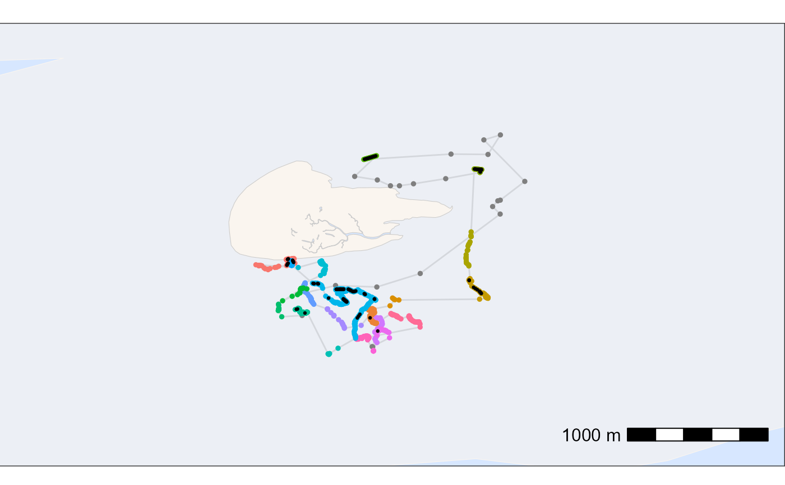

This function interpolates gaps in the tracking data within a set time
interval (interp_interval) and within defined temporal and spatial
restrictions. Cooridnates in gaps a filled with a simple linear interpolation
using zoo::na.approx(). One is required to specify the maximal time gap
(max_gap) between positions that will be interpolated and can additionally
specify a maximal distance between positions (max_dist) to restrict
interpolation to more local movements. If patches_only = TRUE,
interpolation is further restricted to only gaps within residence patches.
Usage
atl_interpolate_track(
data,
tag = "tag",
x = "x",
y = "y",
time = "time",
patch = "patch",
interp_interval = 60,
max_gap = NULL,
max_dist = NULL,
patches_only = TRUE,
quietly = FALSE
)Arguments
- data
A
data.frameordata.tablecontaining tracking data.- tag
Character. Name of the column containing tag or individual IDs. Defaults to
"tag".- x
Character. Name of the column containing x coordinates. Defaults to
"x".- y
Character. Name of the column containing y coordinates. Defaults to
"y".- time
Character. Name of the column containing UNIX timestamps (numeric, in seconds). Defaults to
"time".- patch
Character. Name of the column containing residence patch IDs. Defaults to
"patch". Only used whenpatches_only = TRUE.- interp_interval
Numeric. The time interval in seconds to interpolate to. Defaults to
60.- max_gap
Numeric. Maximum gap in seconds between two observed positions for which interpolation is performed. Gaps larger than this value will not be interpolated. Defaults to
NULL.- max_dist
Numeric or
NULL. Maximum distance in coordinate units between two observed positions for which interpolation is performed. IfNULL(default), no distance filter is applied.- patches_only
Logical. If
TRUE(default), interpolation is restricted to gaps within the same patch ID. Requires the column specified inpatchto be present indata.- quietly
If
TRUEreturns percentage and number of positions filtered, ifFALSEfunctions runs quietly
Value
A data.table with the same columns as the input, plus datetime
(POSIXct timestamp in UTC), gap_next (time in seconds to the next
observed position), interpolated (logical, TRUE for interpolated
rows), and optionally dist_next (distance to the next observed position,
if max_dist is set). Rows are ordered by tag and time.
Details
Best to use with already thinned data (e.g. with atl_thin_data()) to avoid
unnecessary interpolation of very fine-scale data and to speed up processing.
Examples
# packages
library(tools4watlas)
library(ggplot2)
# load example data of one red knot
data <- data_example[tag == "3038"]
# calculate residence patches
data <- atl_res_patch(
data,
max_speed = 3, lim_spat_indep = 75, lim_time_indep = 180,
min_fixes = 3, min_duration = 120
)
# thin dataa to 1 min intervall
data <- atl_thin_data(
data = data,
interval = 60,
id_columns = c("tag", "species"),
method = "aggregate"
)
# interpolate data within residence patches
data_int <- atl_interpolate_track(
data = data,
tag = "tag",
x = "x",
y = "y",
time = "time",
patch = "patch",
interp_interval = 60,
max_gap = 3600 * 8,
max_dist = NULL,
patches_only = TRUE
)
#> Note: Interpolation added 207 positions (22.45% increase).
# check data
head(data_int)
#> Key: <tag, time>
#> tag time datetime x y patch gap_next
#> <char> <num> <POSc> <num> <num> <char> <num>
#> 1: 3038 1695430800 2023-09-23 01:00:00 650123.1 5902399 1 0
#> 2: 3038 1695430860 2023-09-23 01:01:00 650125.5 5902398 1 60
#> 3: 3038 1695430920 2023-09-23 01:02:00 650117.7 5902400 1 60
#> 4: 3038 1695430980 2023-09-23 01:03:00 650123.5 5902399 1 60
#> 5: 3038 1695431040 2023-09-23 01:04:00 650123.1 5902399 1 60
#> 6: 3038 1695431100 2023-09-23 01:05:00 650125.2 5902399 1 60
#> interpolated
#> <lgcl>
#> 1: FALSE
#> 2: FALSE
#> 3: FALSE
#> 4: FALSE
#> 5: FALSE
#> 6: FALSE
### plot data to check results
# create basemap
bm <- atl_create_bm(data_int, buffer = 800)
# plot points and tracks with standard ggplot colours
bm +
geom_path(
data = data_int, aes(x, y),
linewidth = 0.5, alpha = 0.1, show.legend = FALSE
) +
geom_point(
data = data_int, aes(x, y, colour = patch),
size = 1, alpha = 1, show.legend = FALSE
) +
geom_point(
data = data_int[interpolated == TRUE], aes(x, y), color = "black",
size = 0.5, alpha = 1, show.legend = FALSE
)
